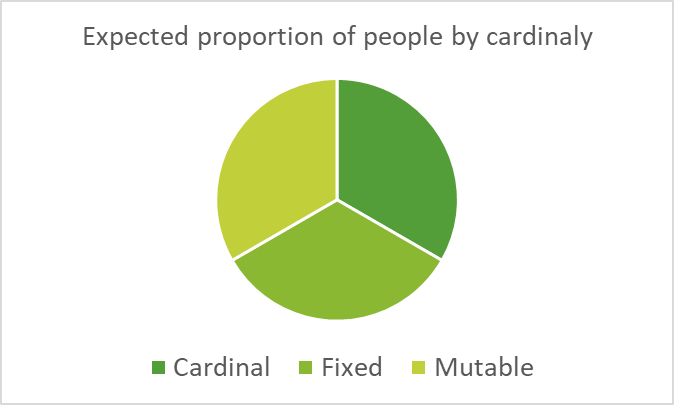
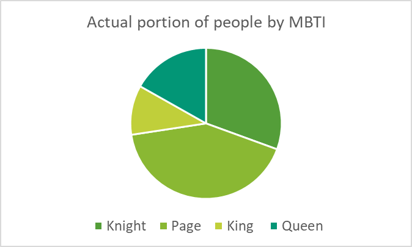

The remaining two MBTI axes — P/J and E/I — determine the elemental qualities of the suits. These axes also decompose cleanly into Hot/Cold and Wet/Dry:
Table 23 - MBTI to Hot, Cold, Wet, Dry Mapping, PJ, EI
P |
Cold |
J |
Hot |
E |
Wet |
I |
Dry |
Combining these produces the four suite-level elemental quadrants:
Table 24 - MBTI to Suit Mapping
IP |
Dry and Cold |
Pentacles |
|
EP |
Wet and Cold |
Cups |
|
IJ |
Dry and Hot |
||
EJ |
Wet and Hot |
Swords |
This completes the mapping:
Together, they produce the full 16-card matrix used throughout the Pymander deck.
MBTI Statistics
There are many published statistics on the percentage of people belonging to each MBTI type, although most datasets are heavily biased toward the United States. Despite this limitation, several statistical patterns strongly influence the assignment of MBTI types to the Tarot Court Cards in the Pymander system.
The first and most important pattern is the gender bias in Thinking and Feeling preferences. Across large samples:
Males: ~60% Thinking (T), ~40% Feeling (F)
Females: ~30% Thinking (T), ~70% Feeling (F)
This makes it straightforward to assign masculine roles to the T-dominant ranks (Kings and Knights) and feminine roles to the F-dominant ranks (Queens and Pages). This gender distribution is one of the reasons the Pymander system assigns the NT / NF / ST / SF combinations to the ranks (King, Queen, Knight, Page) rather than to the suits. Doing so preserves the natural gender weighting found in the population.
A second major statistical pattern is the distribution of Sensing vs iNtuitive types:
S types: ~75% of the population
N types: ~25% of the population
This aligns perfectly with the idea that Knights and Pages (the S types) are far more common than Kings and Queens (the N types). It also reinforces the symbolic distinction: Kings and Queens look at the big picture (N), while Knights and Pages deal with day-to-day reality (S).
These two statistical patterns — gender distribution and S/N distribution — form the backbone of the Pymander mapping.
Table 25 - MBTI Percentages of Population
MBTI |
% of Population |
% of Male |
% of Female |
|||
1.5% |
0.8% |
2.1% |
||||
1.8% |
3.0% |
0.8% |
||||
2.1% |
3.5% |
1.0% |
||||
2.5% |
1.4% |
3.5% |
||||
3.3% |
5.4% |
1.5% |
||||
3.4% |
5.5% |
1.5% |
||||
4.4% |
7.2% |
2.0% |
||||
4.5% |
2.5% |
6.2% |
||||
5.5% |
9.1% |
2.5% |
||||
8.3% |
4.5% |
11.4% |
||||
8.7% |
4.8% |
11.9% |
||||
8.9% |
14.6% |
4.1% |
||||
9.0% |
4.9% |
12.4% |
||||
11.8% |
6.5% |
16.3% |
||||
11.8% |
19.5% |
5.4% |
||||
12.5% |
6.9% |
17.3% |
||||
Suits
All four suits are approximately equally represented in the population.
Wands correspond to the IJ types — Introverted Judging. They prefer to work alone rather than in groups, and they judge things, deciding what should be and what should not be. They attempt to shape the physical world according to their internal standards. As Fire types (Hot and Dry), they possess strong willpower, direction, and the capacity to impose structure on the world.
Swords correspond to the EJ types — Extroverted Judging. They believe in collaboration rather than solitary work, and they judge people, forming expectations about how others should behave. As Air types (Hot and Wet), they are oriented toward leadership, rules, coordination, and social organisation.
Cups correspond to the EP types — Extroverted Perceiving. They favour collaboration over individualism, and they perceive other people as they are, rather than how they think they should be. As Water types (Cold and Wet), they are socially attuned, adaptable, emotionally responsive, and sensitive to the interpersonal environment.
Pentacles correspond to the IP types — Introverted Perceiving. Guided primarily by their own internal compass, they possess independence and a grounded sense of reality. They perceive the world as it is, rather than how they or others think it should be. As Earth types (Cold and Dry), they are private, self-directed, and concerned with stability, integrity, and personal standards.
It can be valuable to think of Earth here as the structured nature of crystal, rather than the amorphous nature of soil or aggregate rock.
DISC Personality Descriptions
From https://www.discprofile.com/what-is-disc:
People with D personalities tend to be confident and place an emphasis on accomplishing bottom-line results.
People with I personalities tend to be more open and place an emphasis on relationships and influencing or persuading others.
People with S personalities tend to be dependable and place the emphasis on cooperation and sincerity.
People with C personalities tend to place the emphasis on quality, accuracy, expertise, and competency.
Tarot suits map easily to the four elements, and hence to suit. These can also be used to determine rank, for which there are a variety of mappings by other authors. Only the Pymander versions are shown:
Table 26 - DISC to Simple Element Mapping
Directness |
|||
Influence |
|||
Steadiness |
|||
Competency |
This aligns perfectly with the MBTI temperament mapping:
DISC therefore provides an independent behavioural confirmation of the Pymander rank assignments.
Psychology “Quotient” tests
Modern psychology uses four major “quotient” tests, each measuring a different dimension of human capability:
Intelligence Quotient (IQ) — how well a person thinks
Social Quotient (SQ) — how well a person manages social relationships
Emotional Quotient (EQ) — how well a person manages emotions
Adversity Quotient (AQ) — how well a person copes with difficulty and failure
These also map naturally to the four elements and therefore to the Tarot suits and ranks:
Table 27 - Quotient to Simple Element Mapping
IQ |
King |
||
SQ |
Queen |
||
EQ |
Page |
||
AQ |
Knight |
Again, the mapping is not symbolic but structural:
Both DISC and the psychological quotient tests converge on the same elemental quadrants used in the Pymander system, reinforcing the internal consistency of the MBTI → Element → Rank → Suit mapping.
Astrological Moon Signs
The MBTI is derived from self-assessment, rather than assessment by others, and is therefore more closely aligned with a person’s Moon sign than their Sun sign. The Moon describes instinctive perception, inner cognition, and one’s private mode of understanding the world — all of which correspond directly to MBTI’s internal cognitive preferences. Thus, the Pymander Tarot incorporates astrology for both Sun (via the traditional Minor Arcana) and Moon (via the MBTI-based Court Cards).
A fundamental difficulty arises when attempting to map sixteen MBTI types and Court Cards onto the twelve zodiac signs. However, MBTI population statistics provide a structural solution.
Comparing MBTI Temperament Distribution with Astrological Cardinalities
The first chart 
shows the approximate percentage of the population belonging to each MBTI temperament:
This produces a natural division:
This mirrors the astrological distribution:
The second chart 
shows the equal-house astrological distribution:
Cardinal ≈ one-third
Fixed ≈ one-third
Mutable ≈ one-third
When the two charts are compared, a clear structural alignment emerges.
To make the two distributions match, the Pymander system assigns:
Knight ST |
1/3 |
|||
Page SF |
1/3 |
|||
King NT |
1/6 |
1/3 |
||
Queen NF |
1/6 |
|||
This produces the only mapping that satisfies both charts:
Thus, the Mutable signs become the paired male and female aspects of each sign, while:
This is not symbolic guesswork — it emerges directly from population statistics and elemental polarity.
Interpretive Notes
The majority of people are Pages, with a slightly smaller number of Knights, and a much smaller number of Kings and Queens — exactly as one would expect in real life.
In the Pymander tradition, the concept of Hermaphrodites originates in the Corpus Hermeticum, where they are described as an earlier or higher form before the sexes were divided. When combined with the ascendency of Fire and Air over Earth and Water, this helps explain why the Mutable signs (Fire + Air pairs) are often considered more spiritual or transcendent.
Virgo and Pisces, in particular, are traditionally associated with completion, maturity, and end-of-cycle wisdom, which aligns well with the King/Queen pairing.
The Rider–Waite–Smith tradition implies the following (inconsistently applied) structure:
The Pymander system resolves this ambiguity by grounding the mapping in MBTI statistics, elemental polarity, and population distribution, producing a coherent and internally consistent model.